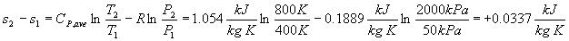
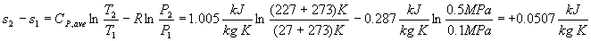
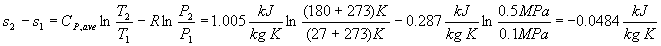
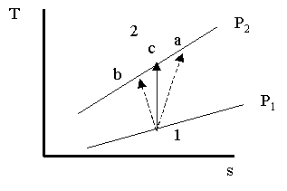

MODULE 12: CHANGES IN ENTROPY
(fragments of the CD that comes with
Cengel&Boles's book "Thermodynamics", 3-d edition, McGraw-Hill,
1998)
Example 1
Carbon dioxide initially at 50 kPa, 400
K undergoes a process in a closed system until its pressure and temperature
are 2 MPa and 800 K, respectively. Assuming ideal gas behavior, find the entropy
change of the carbon dioxide by first assuming constant specific heats and then
assuming variable specific heats.
a. Assume the 300 K data are adequate, then
Cp = 0.8418 kJ/kg-K.
R = 0.18892 kJ/kg K
b. For variable specific heat data, use the carbon dioxide table.
* Repeat the constant specific calculation assuming Cp is a constant at the average of the specific heats for the temperatures. Then Cp = 1.054 kJ/kgK (see Table A-2(b)).

It looks like the 300K data gives completely incorrect results here.
If the compression process is adiabatic, why is change of s positive for this process?
Example 2
Air, initially at 17ºC, is compressed in an isentropic process through a pressure ratio of 8:1. Find the final temperature assuming constant specific heats and variable specific heats.
a. Constant specific heats, isentropic process
(T2/T1)s=const=(P2/P1) (k-1)/k
For air, k = 1.4, and a pressure ratio of 8:1 means that P2/P1 = 8.
b. Variable specific heat method
Using the air table for T1 = (17+273) K = 290 K, Pr1 = 1.2311
Interpolating in the air table at this value of Pr2, gives T2 = 522.4 K = 249.4ºC
*A second variable specific heat method.
Using the air table for T1 = (17+273) K = 290 K, soT1 = 1.66802 kJ/(kg K).
For the isentropic process
At this value of s02, the air table gives T2 = 522.4 K= 249.4ºC.
Example 3
Air initially at 0.1 MPa, 27ºC is compressed reversibly to a final state.
(a) Find the entropy change of the air when the final state is 0.5 MPa, 227ºC.
(b) Find the entropy change when the final state is 0.5 MPa, 180ºC.
(c) Find the temperature at 0.5 MPa that makes the entropy change zero.
Show the two processes on a T-s diagram.
Let's assume that air is an ideal gas with constant specific heats.
a.

b.

c.

Example 4
Nitrogen expands isentropically in a piston cylinder device from a temperature of 500 K while its volume doubles. What is the final temperature of the nitrogen, and how much work did the nitrogen do against the piston, in kJ/kg?
System: The closed piston-cylinder device.
Property Relation: Ideal gas equations, constant properties.
Process and Process Diagram: Isentropic expansion
Conservation Principles:
Second law:
For the isentropic process, s = 0, and for constant properties find the final temperature by
First law, closed system: Note, for the isentropic process (reversible, adiabatic) the heat transfer is zero. The conservation of energy becomes
Using the ideal gas relations, the work per unit mass is
Example 5
A Carnot engine has 1 kg of air as the working fluid. Heat is supplied to the air at 800 K and rejected by the air at 300 K. At the beginning of the heat addition process the pressure is 0.8 MPa and during this process the volume triples.
(a) Calculate the net cycle work assuming air is an ideal gas with constant specific heats.
(b) Calculate the amount of work done in the isentropic expansion process.
(c) Calculate the entropy change during the heat rejection process.
System: The Carnot engine piston-cylinder device.
Property Relation: Ideal gas equations, constant properties.
Process and Process Diagram: Constant temperature heat addition.
Conservation Principles:
a.
Apply the first law, closed system to the constant temperature heat addition process, 1-2.
So, for the ideal gas isothermal process,
But,
The cycle thermal efficiency is
For the Carnot Cycle, the thermal efficiency is also given by
The net work done by the cycle is
b.
Apply the first law, closed system to the isentropic expansion process, 2-3.
But, the isentropic process is adiabatic, reversible; so, Q23 = 0.
Using the ideal gas relations, the work per unit mass is
This is the work leaving the cycle in process 2-3.
c.
Using equation (6.22)
But, T4 = T3 = TL = 300 K, and we need to find P4 and P3.
Consider process 1-2 where T1 = T2 = TH = 800 K, and, for ideal gases
Consider process 2-3 where s3 = s2.
Now, consider process 4-1 where s4 = s1.
Now,